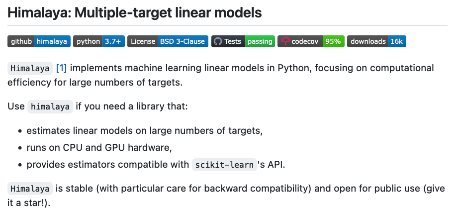

Learn
|  | Voxelwise modeling tutorials. Voxelwise modeling is a framework for fitting linear(ized) encoding models to functional magnetic resonance imaging (fMRI) datasets. Voxelwise modeling can produce high-resolution, high-dimensional functional brain maps in single individuals, while minimizing problems due to Type 1 and Type 2 error that are common in other approaches to fMRI data analysis. |